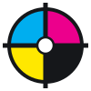

Brand Style Guide
Project C looks like a print shop that went independent: white paper, black ink, a deep-orange lead, and the CMYK registration marks of old newspaper presses. This page documents how the pieces fit together so every page reads like the same publication.
Last updated July 2026Logo
The full logo is the wordmark stacked over the four-dot CMYK "C." Lead with it wherever there's room; drop to the mark alone only when space is tight. Use the approved files, give it clearance, and never rebuild or recolor it.

{kind=link}
{kind=link}
Do
- Keep clear space of at least the mark's own height on every side.
- Use the color mark on light grounds, the white mark on ink or imagery.
- Scale proportionally and use the supplied high-resolution files.
Don't
- Stretch, rotate, or recolor the mark outside the approved versions.
- Add shadows, gradients, or outlines.
- Place it on a busy or low-contrast background.
Registration Mark
The signature device is a printer's registration target: a crosshair and ring over four CMYK quadrants, with "EST. 2024" in the white center. It shows up as the favicon, the spinning footer seal, and section ornaments.

The four quadrants are the process colors of the logo: cyan, magenta, yellow, and key black. The center holds the founding year the way a press stamp would.
The color quadrants sit deliberately misregistered, nudged off-center by a few pixels, the way an old press drifts out of alignment. That intentional imperfection is the point: it signals print, craft, and independence rather than a sterile digital logo.
In the footer the quadrants and ring text rotate slowly while the crosshair stays fixed, so the mark reads as a live press plate. Keep the drift and the rotation; don't "clean them up."
Color
White paper, black ink, one warm lead. The CMYK process colors are pops, not fields. Click any swatch to copy its hex.
Contrast rule
On white, coral is a fill or block color, not a text color. For coral type or links use Coral Deep #B74D2F, which clears WCAG AA. Text on cyan, yellow, and coral blocks stays ink; on magenta and ink it goes porcelain.
Typography
Two workhorses and one accent. Anton shouts, Inter reads, Fraunces adds a human note. The type is becoming the brand, so lean into it.
Enormous once per page
Let exactly one display headline per page go genuinely huge, roughly 4–6rem or more, magazine scale. Everywhere else stays calm so that one moment lands. The white-fill outline treatment (shown above on "CREATOR") is reserved for the homepage.
Iconography
Custom line icons, never emoji or stock glyphs. Each is drawn on a 40×40 grid in ink stroke with round caps, plus one small coral accent for a pop.
Buttons & Elements
Buttons are square, uppercase, and ink-ruled, never pills. One primary action per view.
Layout Patterns
Pages are built from full-bleed blocks divided by 2px ink rules on a modular grid. These are the recurring pieces.
Cyan
Ink
Yellow
Coral
Page Hierarchy
The site is an editorial publication, not a stack of landing pages. The homepage is the loudest. Every level deeper gets calmer and more focused on the reader's task.
Home, Community. Bold: outline-word hero, faces wall, heavy CMYK grid.
Coaching, Going Solo, Research & Press, About. Calm editorial masthead, one goal, one CTA.
Reports, this guide. Typography-first and minimal. The content is the hero.
One new composition rule
No page uses more than three established patterns without introducing at least one new composition. Every page contributes something fresh, so the system grows instead of repeating.